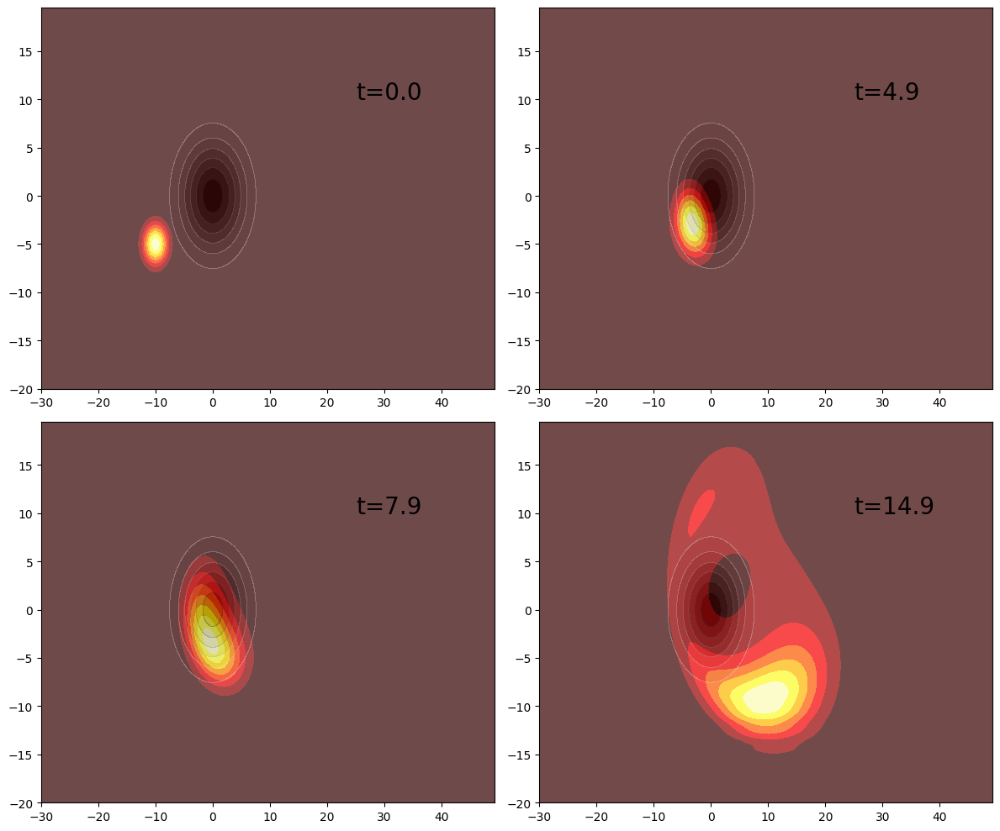

This notebook can be found on github
Dynamics of a two-dimensional wavepacket hitting a Gaussian potential
using QuantumOptics, PyPlotIn this example we will show how one can evolve a wavepacket in 2 spatial dimensions. We will do that using tensor products between the two spaces. We start similarly to the 1D case, by defining a position basis and a momentum operator for each dimension.
Npoints = 100
Npointsy = 80
xmin = -30
xmax = 50
b_position = PositionBasis(xmin, xmax, Npoints)
b_momentum = MomentumBasis(b_position)
ymin = -20
ymax = 20
b_positiony = PositionBasis(ymin, ymax, Npointsy)
b_momentumy = MomentumBasis(b_positiony)The collective FFTOperator is defined analogously to the 1D case using the composite bases.
b_comp_x = b_position ⊗ b_positiony
b_comp_p = b_momentum ⊗ b_momentumy
Txp = transform(b_comp_x, b_comp_p)
Tpx = transform(b_comp_p, b_comp_x)Thanks to these operators, we can specify the momentum operators in the respective MomentumBasis, where they are diagonal. Applying a diagonal operator is of course much more efficient.
px = momentum(b_momentum)
py = momentum(b_momentumy)Now that we have a composite basis, we can write each kinetic energy term in this composite basis. In order to keep the FFTOperator approach efficient, we will do this using lazy operations.
Hkinx = LazyTensor(b_comp_p, [1, 2], (px^2/2, one(b_momentumy)))
Hkiny = LazyTensor(b_comp_p, [1, 2], (one(b_momentum), py^2/2))
Hkinx_FFT = LazyProduct(Txp, Hkinx, Tpx)
Hkiny_FFT = LazyProduct(Txp, Hkiny, Tpx)Now we will add a two-dimensional potential. This can be easily done using the potentialoperator function which takes to arguments, a basis and a function describing the potential in space.
Note: The function describing the potential has to fulfill two conditions:
- The number of arguments must be equal to the number of bases constituting the composite basis.
- The order of the function arguments must be the same as the order in the tensor product used to define the composite basis.
potential(x,y) = exp(-(x^2 + y^2)/30.0)
V = potentialoperator(b_comp_x, potential)Then one creates the full Hamiltonian simply by combining the kinetic and potential terms
H = LazySum(Hkinx_FFT, Hkiny_FFT, V)Now we will create a wavepacket in 2D and evolve it.
x0 = -10
y0 = -5
p0_x = 1.5
p0_y = 0.5
σ = 2.0
ψx = gaussianstate(b_position, x0, p0_x, σ)
ψy = gaussianstate(b_positiony, y0, p0_y, σ)
ψ = ψx ⊗ ψy
T = collect(0.0:0.1:20.0)
tout, ψt = timeevolution.schroedinger(T, ψ, H)using LinearAlgebra
density = [Array(transpose(reshape((abs2.(ψ.data)), (Npoints, Npointsy)))) for ψ=ψt]
V_plot = Array(transpose(reshape(real.(diag(V.data)), (Npoints, Npointsy))))
xsample, ysample = samplepoints(b_position), samplepoints(b_positiony)
figure(figsize=(12, 10))
subplot(221)
contourf(xsample, ysample, density[1], cmap="hot")
contourf(xsample, ysample, V_plot, alpha=0.3, cmap="Greys")
annotate(xy=[25, 10], text="t=$(T[1])", fontsize=20)
subplot(222)
contourf(xsample, ysample, density[50], cmap="hot")
contourf(xsample, ysample, V_plot, alpha=0.3, cmap="Greys")
annotate(xy=[25, 10], text="t=$(T[50])", fontsize=20)
subplot(223)
contourf(xsample, ysample, density[80], cmap="hot")
contourf(xsample, ysample, V_plot, alpha=0.3, cmap="Greys")
annotate(xy=[25, 10], text="t=$(T[80])", fontsize=20)
subplot(224)
contourf(xsample, ysample, density[150], cmap="hot")
contourf(xsample, ysample, V_plot, alpha=0.3, cmap="Greys")
annotate(xy=[25, 10], text="t=$(T[150])", fontsize=20)
tight_layout()